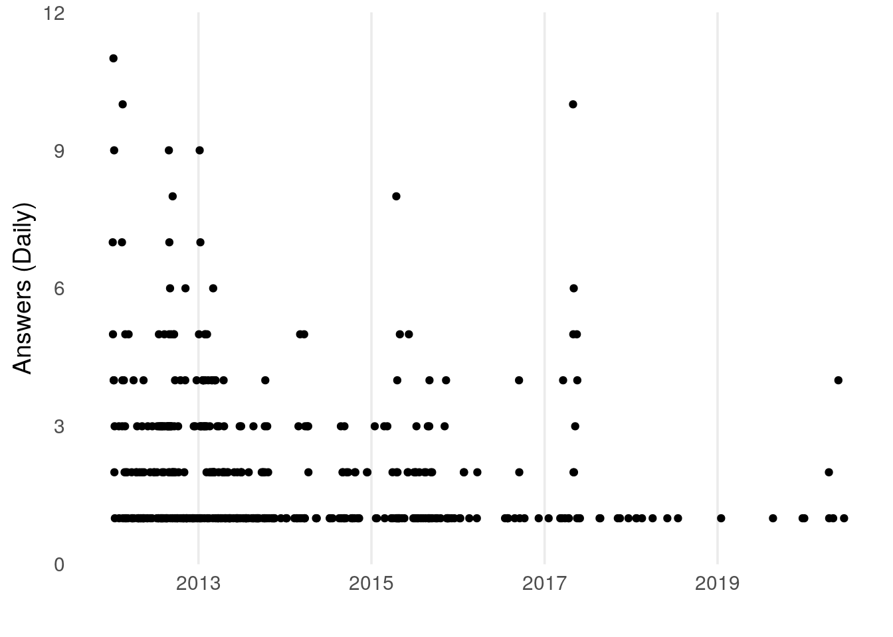
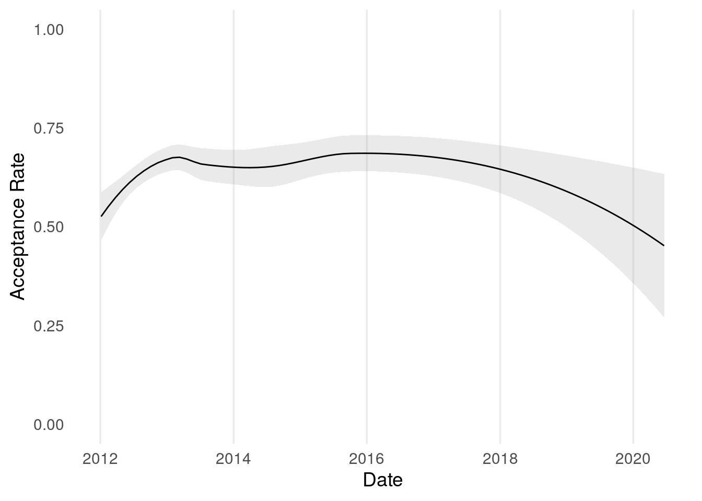
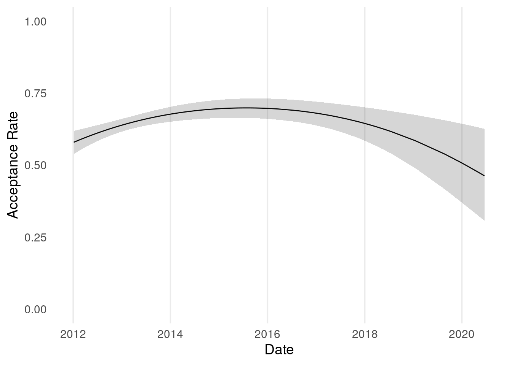

Binary data often also arises through a process of simplifying analysis: eg. replacing a question which could be on a continuous scale, with a cut-off: for instance, analysis of exam pass/fail rates is a simpler problem to explore than the full distribution of exam marks
Binary data occurs in many natural settings where we wish to understand the relative likelihood of one of two outcomes occuring (often referred to as failure \(0\) and success). For instance whether or not a newborn child is a boy or a girl (in this context, one might be cautioned against the failure/success terminology).
The natural statistic of interest for binary questions is the underlying proportion of successes. Given a sample of \(n\) observations with \(0 \leq s \leq n\) successes, the classical (maximum likelihood) estimate for the success rate is simply \(s/n\), the proportion of the observed data that were successes.
Robinson’s introduction to Empirical Bayes through baseball statistics is an excellent resource for learning the basics of binary inference. Unfortunately it does not explore timeseries. In many instances it is likely that this binary data makes up a timeseries: for example in baseball, the proportion of hits a player makes out of all balls they are thrown (apparently known as At Bats). In this context we would expect this proportion to vary over time - both due to game specific covariates (eg. who pitched the ball), and temporal affects (eg. improving performance with experience).
In such applications any underlying success rate at a given point in time is likely to be correlated with success rates within the recent past and future. Estimates for the success rate that do not take into account this correlation will therefore likely be overly susceptible to natural variance.
Our focus will be on exploring methods for analysing binary time series under two challenging conditions:
Where the number of observations at each time point is low - meaning that estimates of success rates which don’t take into account nearby observtaions are likely to be too broad to provide insight.
Where data does not arrive at routine intervals - meaning that methods that are based on differencing/neighbouring statistics are not very easy to define.
Data is made available through the Stack Exchange API; this can be queried in R usnig the stackr package - coincidentally written by the same David Robinson referenced above. For an open source data set that exhibits the features defined above, we consider the acceptance rate of answers to Stack Exchange questions. In particular we will look at the data of a single user Xi’an on Cross Validated (stats.stackexchange) who is at the time of writing the top ranked user for the Bayesian tag.
 The number of questions answered in March 2020 illustrates that the data shows both low volumes, and intermittent frequency
A sample of the first 6 rows of the data are shown below; for the most part we work with data that is aggregated to a daily level - we will however consider one model that looks at variation within days at the end.
| date | answered | accepted |
|---|---|---|
| 2011-11-05 | 4 | 1 |
| 2011-11-07 | 2 | 2 |
| 2011-11-11 | 2 | 1 |
| 2011-11-13 | 1 | 0 |
| 2011-11-19 | 3 | 1 |
| 2011-11-24 | 1 | 1 |
Putting aside the option of treating days as independent, likely the simplest model would be to aggregate data up to a suitable level which ensures a sufficient volume of data to be able to treat units as independent, whilst maintaing relevance/utility of the outcome.
For our purposes a reasonable level of aggregation may be considered to be monthly data (aggregating by year feels too coarse); at this point we derive acceptance rates and confidence intervals at the monthly level using the standard (Maximum Likelihood, and normal approximation) method.
 Even at a monthly level there is high variance between months and no discernable trend.
